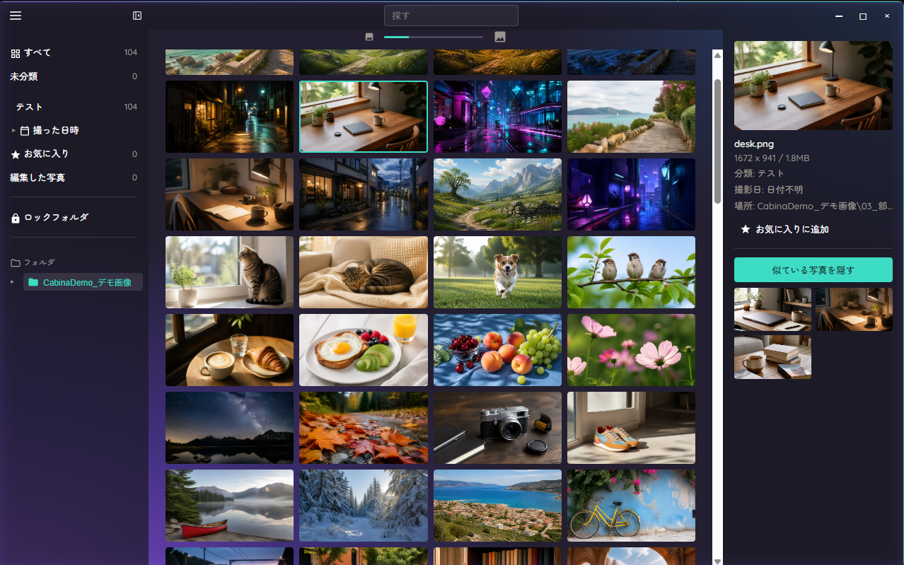
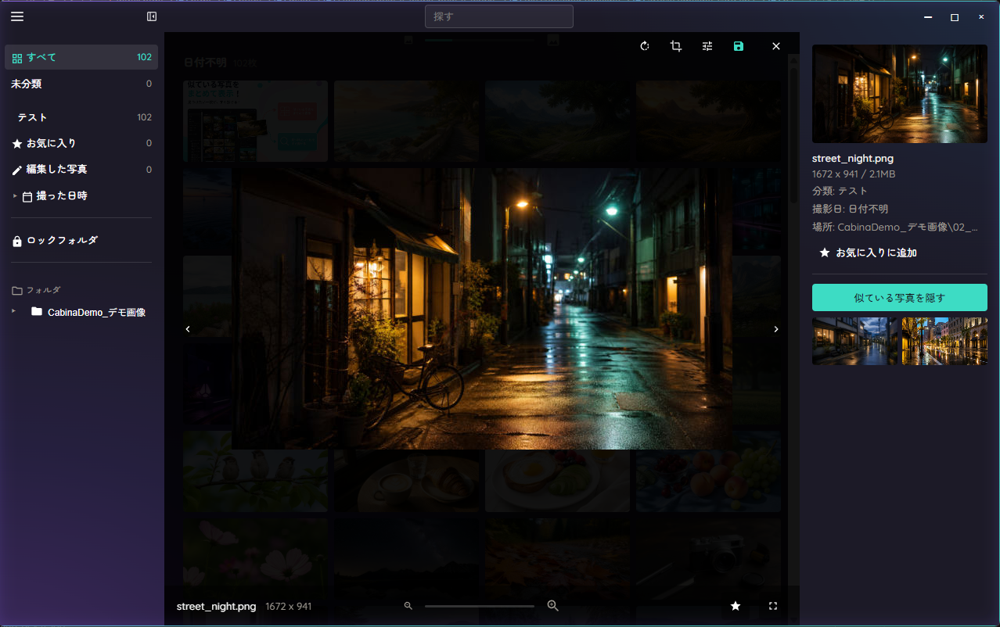
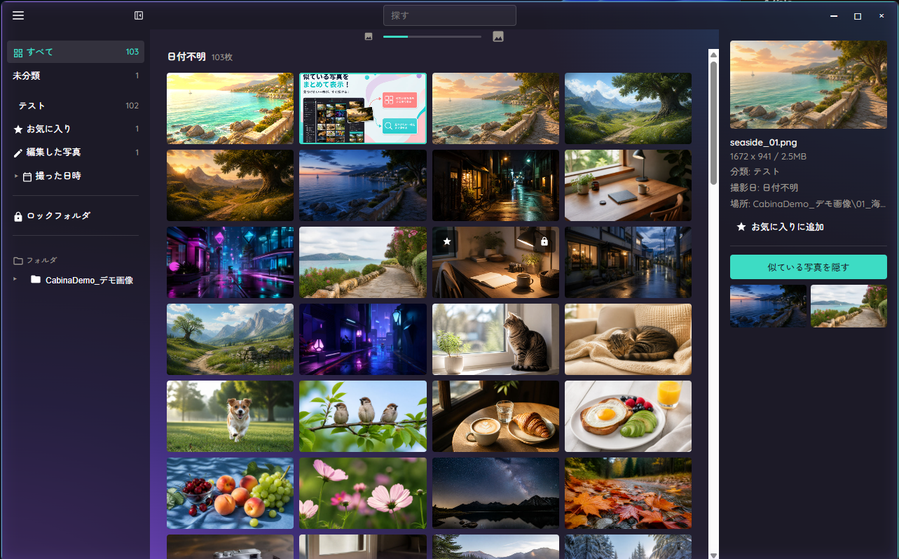

似たカットを並べて使う1枚を選び、IDやロゴを複数の画像にまとめて入れて、X や Instagram など投稿先のサイズで書き出せます。
体験版でも、すべての機能を使えます。アカウント登録はいりません。



撮った画像が、
投稿されないまま増えていく。
選ぶ・整える・書き出すが、Cabinaひとつで終わります。
登録したフォルダの画像が1つの一覧に並びます。似ている写真やお気に入りから候補を比べて、使う画像だけを選べます。
1枚で決めた明るさ・文字・ロゴを、選んだ画像にまとめて反映できます。元の画像は変えず、別のファイルとして保存します。
X・Bluesky・Instagram など、投稿先のサイズを選んでまとめて書き出せます。GIF や ZIP にまとめることもできます。
「料理」「夜景」のように、写っているものを言葉で探せます。ファイル名を覚えていなくても見つかります。
気になる1枚を選ぶと、近いカットが横に並びます。埋もれていた写真も候補に入ります。
また使いたい1枚に星を付けて、まとめて見返せます。
向きを変える、残したい範囲を切り抜く、明るさや彩度を整える。投稿の前のちょっとした調整がその場でできます。
編集した画像は別のファイルとして保存します。元の画像は変わりません。
買い切りで です。月額の支払いはありません。
30日間、すべての機能を使えます。アカウント登録はいりません。
いいえ。元の画像は移動も変更もしません。編集した画像は、別のファイルとして保存します。
すべて、お使いのパソコンの中で処理します。画像を見分ける仕組み（Google が公開している画像認識モデル「SigLIP2」）もアプリに入っているので、インターネットにつながずに使えます。
Windows 10 / 11（64bit）です。Mac とスマートフォンには対応していません。メモリ 8GB 以上、空き容量 1GB 以上を推奨します。専用のグラフィックボードはいりません。
フォルダを登録したときに、一度だけ画像を読み込みます。枚数に応じて時間がかかりますが、次からはすぐに一覧が出ます。
画像を見分ける仕組み（約350MB）をアプリに入れているためです。パソコンの中だけで処理するための作りです。